에너지관리기사 (2021-03-07 기출문제)
1과목: 연소공학
1. 고체연료의 연소방법이 아닌 것은?
- 미분탄 연소
- 유동층 연소
- 화격자 연소
- 액중 연소
(정답률: 66%)

2. 다음 연료 중 저위발열량이 가장 높은 것은?
- 가솔린
- 등유
- 경유
- 중유
(정답률: 74%)
3. 고체연료를 사용하는 어떤 열기관의 출력이 3000kW 이고 연료소비율이 1400 kg/h 일 때 이 열기관의 열효율은 약 몇 % 인가? (단, 이 고체연료의 저위발열량은 28 MJ/kg 이다.)
- 28
- 38
- 48
- 58
(정답률: 41%)
4. 연소가스 분석결과가 CO2 13%, O2 8%, CO 0% 일 때 공기비는 약 얼마인가? (단, (CO2)max는 21% 이다.)
- 1.22
- 1.42
- 1.62
- 1.82
(정답률: 55%)
5. 연소가스 중의 질소산화물 생성을 억제하기 위한 방법으로 틀린 것은?
- 2단 연소
- 고온 연소
- 농담 연소
- 배기가스 재순환 연소
(정답률: 73%)
6. C8H18 1mol을 공기비 2로 연소시킬 때 연소가스 중 산소의 몰분율은?
- 0.065
- 0.073
- 0.086
- 0.101
(정답률: 37%)
7. 메탄(CH4)가스를 공기 중에 연소시키려 한다. CH4의 저위발열량이 50000 kJ/kg 이라면 고위발열량은 약 몇 kJ/kg 인가? (단, 물의 증발잠열은 2450 kJ/kg 으로 한다.)
- 51700
- 55500
- 58600
- 64200
(정답률: 48%)
8. 연돌의 실제 통풍압이 35mmH2O 송풍기의 효율은 70%, 연소가스량이 200m3/min 일 때 송풍기의 소요 동력은 약 몇 kW 인가?
- 0.84
- 1.15
- 1.63
- 2.21
(정답률: 38%)
9. 기체 연료의 장점이 아닌 것은?
- 연소조절이 용이하다.
- 운반과 저장이 용이하다.
- 회분이나 매연이 적어 청결하다.
- 적은 공기로 완전연소가 가능하다.
(정답률: 76%)
10. 질량비로 프로판 45%, 공기 55%인 혼합가스가 있다. 프로판 가스의 발열량이 100MJ/Nm3 일 때 혼합가스의 발열량은 약 몇 MJ/Nm3인가? (단, 공기의 발열량은 무시한다.)
- 29
- 31
- 33
- 35
(정답률: 27%)
11. 다음 중 중유의 성질에 대한 설명으로 옳은 것은?
- 점도에 따라 1, 2, 3급 중유로 구분한다.
- 원소 조성은 H가 가장 많다.
- 비중은 약 0.72 ~ 0.76 정도이다.
- 인화점은 약 60 ~ 150℃ 정도이다.
(정답률: 58%)
12. 연소에서 고온부식의 발생에 대한 설명으로 옳은 것은?
- 연료 중 황분의 산화에 의해서 일어난다.
- 연료 중 바나듐의 산화에 의해서 일어난다.
- 연료 중 수소의 산화에 의해서 일어난다.
- 연료의 연소 후 생기는 수분이 응축해서 일어난다.
(정답률: 68%)
13. 다음 연료 중 이론공기량(Nm3/Nm3)이 가장 큰 것은?
- 오일가스
- 석탄가스
- 액화석유가스
- 천연가스
(정답률: 48%)
14. 연소 시 점화 전에 연소실가스를 몰아내는 환기를 무엇이라 하는가?
- 프리퍼지
- 가압퍼지
- 불착화퍼지
- 포스트퍼지
(정답률: 76%)
15. 다음 반응식을 가지고 CH4의 생성엔탈피를 구하면 몇 kJ 인가?
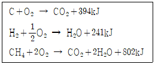
- -66
- -70
- -74
- -78
(정답률: 50%)
16. 다음 중 매연의 발생 원인으로 가장 거리가 먼 것은?
- 연소실 온도가 높을 때
- 연소장치가 불량한 때
- 연료의 질이 나쁠 때
- 통풍력이 부족할 때
(정답률: 76%)
17. 가연성 액체에서 발생한 증기의 공기 중 농도가 연소범위 내에 있을 경우 불꽃을 접근시키면 불이 붙는데 이때 필요한 최저온도를 무엇이라고 하는가?
- 기화온도
- 인화온도
- 착화온도
- 임계온도
(정답률: 65%)
18. 다음 기체 중 폭발범위가 가장 넓은 것은?
- 수소
- 메탄
- 벤젠
- 프로판
(정답률: 80%)
19. 로터리 버너로 벙커 C유를 연소시킬 때 분무가 잘 되게 하기 위한 조치로서 가장 거리가 먼 것은?
- 점도를 낮추기 위하여 중유를 예열한다.
- 중유 중의 수분을 분리, 제거한다.
- 버너 입구 배관부에 스트레이너를 설치한다.
- 버너 입구의 오일 압력을 100kPa 이상으로 한다.
(정답률: 67%)
20. 분자식이 CmHn 인 탄화수소가스 1Nm3을 완전 연소시키는데 필요한 이론공기량은 약 몇 Nm3인가? (단, CmHn의 m, n은 상수이다.)
- m + 0.25n
- 1.19m + 4.76n
- 4m + 0.5n
- 4.76m + 1.19n
(정답률: 54%)
2과목: 열역학
21. 원통형 용기에 기체상수 0.529 kJ/kg·K의 가스가 온도 15℃에서 압력 10MPa로 충전되어 있다. 이 가스를 대부분 사용한 후에 온도가 10℃로, 압력이 1MPa로 떨어졌다. 소비된 가스는 약 몇 kg인가? (단, 용기의 체적은 일정하며 가스는 이상기체로 가정하고, 초기상태에서 용기내의 가스 질량은 20kg이다.)
- 12.5
- 18.0
- 23.7
- 29.0
(정답률: 44%)
22. 0℃의 물 1000kg을 24시간 동안에 0℃의 얼음으로 냉각하는 냉동 능력은 약 몇 kW 인가? (단, 얼음의 융해열은 335 kJ/kg이다.)
- 2.15
- 3.88
- 14
- 14000
(정답률: 54%)
23. 부피 500L 인 탱크 내에 건도 0.95의 수증기가 압력 1600kPa로 들어있다. 이 수증기의 질량은 약 몇 kg 인가? (단, 이 압력에서 건포화증기의 비체적은 vg = 0.1237 m3/kg, 포화수의 비체적은 vf= 0.001 m3/kg 이다.)
- 4.83
- 4.55
- 4.25
- 3.26
(정답률: 35%)
24. 단열변화에서 압력, 부피, 온도를 각각 P, V, T로 나타낼 때, 항상 일정한 식은? (단, k는 비열비이다.)
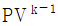
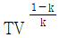
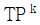
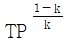
(정답률: 45%)
25. 오존층 파괴와 지구 온난화 문제로 인해 냉동장치에 사용하는 냉매의 선택에 있어서 주의를 요한다. 이와 관련하여 다음 중 오존 파괴 지수가 가장 큰 냉매는?
- R-134a
- R-123
- 암모니아
- R-11
(정답률: 68%)
26. 다음 그림은 Rankine 사이클의 h-s선도이다. 등엔트로피 팽창과정을 나타내는 것은?
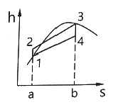
- 1 → 2
- 2 → 3
- 3 → 4
- 4 → 1
(정답률: 44%)
27. 이상기체의 내부 에너지 변화 du를 옳게 나타낸 것은? (단, CP는 정압비열, CV는 정적비열, T는 온도 이다.)
- CPdT
- CVdT
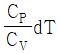
- CVCPdT
(정답률: 61%)
28. 그림은 Carnot 냉동사이클을 나타낸 것이다. 이 냉동기의 성능계수를 옳게 표현한 것은?
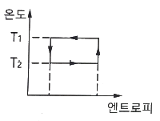
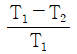
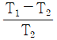
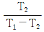
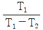
(정답률: 52%)
29. 교축과정에서 일정한 값을 유지하는 것은?
- 압력
- 엔탈피
- 비체적
- 엔트로피
(정답률: 68%)
30. 분자량이 16, 28, 32 및 44인 이상기체를 각각 같은 용적으로 혼합하였다. 이 혼합 가스의 평균 분자량은?
- 30
- 33
- 35
- 40
(정답률: 50%)
31. 초기조건이 100kPa, 60℃인 공기를 정적과정을 통해 가열한 후 정압에서 냉각과정을 통하여 500kPa, 60℃로 냉각할 때 이 과정에서 전체 열량의 변화는 약 몇 kJ/kmol인가? (단, 정적비열은 20kJ/kmol·K, 정압비열은 28kJ/kmol·K 이며, 이상기체는 가정한다.)
- -964
- -1964
- -10656
- -20656
(정답률: 45%)
32. 피스톤이 장치된 실린더 안의 기체가 체적 V1에서 V2로 팽창할 때 피스톤에 해준 일은
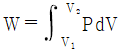
로 표시될 수 있다. 이 기체는 이 과정을 통하여 PV2 = C(상수)의 관계를 만족시켜 준다면 W를 옳게 나타낸 것은?- P1V1 - P2V2
- P2V2 - P1V1
- P1V12 - P2V22
- P2V22 - P1V12
(정답률: 45%)
33. 다음 설명과 가장 관계되는 열역학적 법칙은?
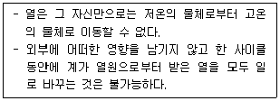
- 열역학 제 0법칙
- 열역학 제 1법칙
- 열역학 제 2법칙
- 열역학 제 3법칙
(정답률: 71%)
34. 이상기체가 A상태(TA, PA)에서 B상태(TB, PB)로 변화하였다. 정압비열 CP가 일정할 경우 비엔트로피의 변화 △s를 옳게 나타낸 것은?
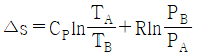
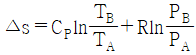
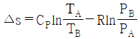
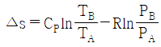
(정답률: 45%)
35. 보일러에서 송풍기 입구의 공기가 15℃, 100kPa 상태에서 공기예열기로 500m3/min가 들어가 일정한 압력하에서 140℃까지 온도가 올라갔을 때 출구에서의 공기유량은 약 몇 m3/min인가? (단, 이상기체로 가정한다.)
- 617
- 717
- 817
- 917
(정답률: 52%)
36. 다음 그림은 물의 상평형도를 나타내고 있다. a~d에 대한 용어로 옳은 것은?
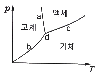
- a : 승화 곡선
- b : 용융 곡선
- c : 증발 곡선
- d : 임계점
(정답률: 52%)
37. 스로틀링(throttling) 밸브를 이용하여 Joule-Thomson 효과를 보고자 한다. 압력이 감소함에 따라 온도가 반드시 감소하게 되는 Joule-Thomson 계수 μ의 값으로 옳은 것은?
- μ = 0
- μ ＞ 0
- μ ＜ 0
- μ ≠ 0
(정답률: 54%)
38. 터빈 입구에서의 내부에너지 및 엔탈피가 각각 3000kJ/kg, 3300kJ/kg인 수증기가 압력이 100kPa, 건도 0.9인 습증기로 터빈을 나간다. 이 때 터빈의 출력은 약 몇 kW 인가? (단, 발생되는 수증기의 질량 유량은 0.2 kg/s 이고, 입출구의 속도차와 위치에너지는 무시한다. 100kPa 에서의 상태량은 아래 표와 같다.)
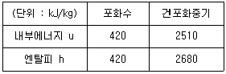
- 46.2
- 93.6
- 124.2
- 169.2
(정답률: 26%)
39. 오토사이클의 열효율에 영향을 미치는 인자들만 모은 것은?
- 압축비, 비열비
- 압축비, 차단비
- 차단비, 비열비
- 압축비, 차단비, 비열비
(정답률: 52%)
40. Rankine 사이클의 4개 과정으로 옳은 것은?
- 가역단열팽창 → 정압방열 → 가역단열압축 → 정압가열
- 가역단열팽창 → 가역단열압축 → 정압가열 → 정압방열
- 정압가열 → 정압방열 → 가역단열압축 → 가역단열팽창
- 정압방열 → 정압가열 → 가역단열압축 → 가역단열팽창
(정답률: 66%)
3과목: 계측방법
41. 레이놀즈수를 나타낸 식으로 옳은 것은? (단, D는 관의 내경, μ는 유체의 점도, ρ는 유체의 밀도, U는 유체의 속도이다.)
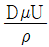
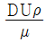
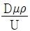
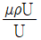
(정답률: 61%)
42. 복사온도계에서 전복사에너지는 절대온도의 몇 승에 비례하는가?
- 2
- 3
- 4
- 5
(정답률: 67%)
43. 물리량과 SI 기본단위의 기호가 틀린 것은?
- 질량 : kg
- 온도 : ℃
- 물질량 : mol
- 광도 : cd
(정답률: 69%)
44. 단열식 열량계로 석탄 1.5g을 연소시켰더니 온도가 4℃상승하였다. 통내 물의 질량이 2000g, 열량계의 물당량이 500g일 때 이 석탄의 발열량은 약 몇 J/g 인가? (단, 물의 비열은 4.19 J/g·K 이다.)
- 2.23×104
- 2.79×104
- 4.19×104
- 6.98×104
(정답률: 46%)
45. 다음 중 유도단위 대상에 속하지 않는 것은?
- 비열
- 압력
- 습도
- 열량
(정답률: 63%)
46. 피드백 제어에 대한 설명으로 틀린 것은?
- 폐회로로 구성된다.
- 제어량과 대한 수정동작을 한다.
- 미리 정해진 순서에 따라 순차적으로 제어한다.
- 반드시 입력과 출력을 비교하는 장치가 필요하다.
(정답률: 69%)
47. 다음 그림과 같이 수은을 넣은 차압계를 이용하는 액면계에 있어 수은면의 높이차(h)가 50.0mm일 때 상부의 압력 취출구에서 탱크 내 액면까지의 높이(H)는 약 몇 mm 인가? (단, 액의 밀도(ρ)는 999 kg/m3이고, 수은의 밀도(ρ0)는 13550 kg/m3 이다.)
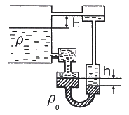
- 578
- 628
- 678
- 728
(정답률: 34%)
48. 열전대 온도계에 대한 설명으로 옳은 것은?
- 흡습 등으로 열화된다.
- 밀도차를 이용한 것이다.
- 자기가열에 주의해야 한다.
- 온도에 대한 열기전력이 크며 내구성이 좋다.
(정답률: 64%)
49. 아래 열교환기의 제어에 해당하는 제어의 종류로 옳은 것은?
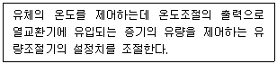
- 추종제어
- 프로그램제어
- 정치제어
- 캐스케이드제어
(정답률: 61%)
50. 다음 중 수분 흡수법에 의해 습도를 측정할 때 흡수제로 사용하기에 가장 적절하지 않은 것은?
- 오산화인
- 피크린산
- 실리카겔
- 황산
(정답률: 46%)
51. 저항 온도계에 관한 설명 중 틀린 것은?
- 구리는 –200~500℃에서 사용한다.
- 시간지연이 적어 응답이 빠르다.
- 저항선의 재료로는 저항온도계수가 크며, 화학적으로나 물리적으로 안정한 백금, 니켈 등을 쓴다.
- 저항 온도계는 금속의 가는 선을 절연물에 감아서 만든 측온저항체의 저항치를 재어서 온도를 측정한다.
(정답률: 58%)
52. 가스크로마토그래피는 다음 중 어떤 원리를 응용한 것인가?
- 증발
- 증류
- 건조
- 흡착
(정답률: 62%)
53. 직각으로 굽힌 유리관의 한쪽을 수면 바로 밑에 넣고 다른 쪽은 연직으로 세워 수평방향으로 0.5m/s 의 속도로 움직이면 물은 관속에서 약 몇 m 상승하는가?
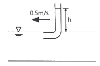
- 0.01
- 0.02
- 0.03
- 0.04
(정답률: 42%)
54. 관로에 설치한 오리피스 전·후의 차압이 1.936 mmH2O 일 때 유량이 22m3/h 이다. 차압이 1.024 mmH2O 이면 유량은 몇 m3/h 인가?
- 15
- 16
- 17
- 18
(정답률: 43%)
55. 다음 중 탄성 압력계에 속하는 것은?
- 침종 압력계
- 피스톤 압력계
- U자관 압력계
- 부르동간 압력계
(정답률: 59%)
56. 액주식 압력계에 사용되는 액체의 구비조건으로 틀린 것은?
- 온도변화에 의한 밀도 변화가 커야 한다.
- 액면은 항상 수평이 되어야 한다.
- 점도와 팽창계수가 작아야 한다.
- 모세관 현상이 적어야 한다.
(정답률: 60%)
57. 다음 중 가스분석 측정법이 아닌 것은?
- 오르사트법
- 적외선 흡수법
- 플로우 노즐법
- 열전도율법
(정답률: 47%)
58. 액체의 팽창하는 성질을 이용하여 온도를 측정하는 것은?
- 수은 온도계
- 저항 온도계
- 서미스터 온도계
- 백금-로듐 열전대 온도계
(정답률: 56%)
59. 전자 유량계에 대한 설명으로 틀린 것은?
- 응답이 매우 빠르다.
- 제작 및 설치비용이 비싸다.
- 고점도 액체는 측정이 어렵다.
- 액체의 압력에 영향을 받지 않는다.
(정답률: 61%)
60. 비례동작만 사용할 경우와 비교할 때 적분동작을 같이 사용하면 제거할 수 있는 문제로 옳은 것은?
- 오프셋
- 외란
- 안정성
- 빠른 응답
(정답률: 64%)
4과목: 열설비재료 및 관계법규
61. 용광로의 원료 중 코크스의 역할로 옳은 것은? (문제 오류로 가답안 발표시 2번으로 발표되었지만 확정 답안 발표시 2, 4번이 정답처리 되었습니다. 여기서는 가답안인 2번을 누르면 정답 처리 됩니다.)
- 탈황작용
- 흡탄작용
- 매용제(煤熔劑)
- 탈산작용
(정답률: 70%)
62. 단조용 가열로에서 재료에 산화스케일이 가장 많이 생기는 가열방식은?
- 반간접식
- 직화식
- 무산화 가열방식
- 급속 가열방식
(정답률: 52%)
63. 에너지이용 합리화법령상 에너지사용계획을 수립하여 산업통상자원부장관에게 제출하여야 하는 공공사업주관자가 설치하려는 시설기준으로 옳은 것은?
- 연간 1천 티오이 이상의 연료 및 열을 사용하는 시설
- 연간 2천 티오이 이상의 연료 및 열을 사용하는 시설
- 연간 2천5백 티오이 이상의 연료 및 열을 사용하는 시설
- 연간 1만 티오이 이상의 연료 및 열을 사용하는 시설
(정답률: 52%)
64. 고온용 무기질 보온재로서 석영을 녹여 만들며, 내약품성이 뛰어나고, 최고사용온도가 1100℃ 정도인 것은?
- 유리섬유(glass wool)
- 석면(asbestos)
- 펄라이트(pearlite)
- 세라믹 파이버(ceramicfiber)
(정답률: 61%)
65. 다음 중 전기로에 해당되지 않는 것은?
- 푸셔로
- 아크로
- 저항로
- 유도로
(정답률: 60%)
66. 내화물의 분류방법으로 적합하지 않는 것은?
- 원료에 의한 분류
- 형상에 의한 분류
- 내화도에 의한 분류
- 열전도율에 의한 분류
(정답률: 39%)
67. 유체의 역류를 방지하여 한쪽 방향으로만 흐르게 하는 밸브 리프트식과 스윙식으로 대별되는 것은?
- 회전밸브
- 게이트밸브
- 체크밸브
- 앵글밸브
(정답률: 72%)
68. 에너지이용 합리화법령에 따라 에너지절약전문기업의 등록이 취소된 에너지절약전문기업은 원칙적으로 등록 취소일로부터 최소 얼마의 기간이 지나면 다시 등록을 할 수 있는가?
- 1년
- 2년
- 3년
- 5년
(정답률: 59%)
69. 신재생에너지법령상 신·재생에너지 중 의무공급량이 지정되어 있는 에너지 종류는?
- 해양에너지
- 지열에너지
- 태양에너지
- 바이오에너지
(정답률: 67%)
70. 에너지이용 합리화법령에 따라 에너지다소비사업자에게 에너지손실요인의 개선명령을 할 수 있는 자는?
- 산업통상자원부장관
- 시·도지사
- 한국에너지공단이사장
- 에너지관리진단기관협회장
(정답률: 63%)
71. 연소가스(화염)의 진행방향에 따라 요로를 분류할 때 종류로 옳은 것은?
- 연속식 가마
- 도염식 가마
- 직화식 가마
- 셔틀 가마
(정답률: 49%)
72. 에너지이용 합리화법령상 산업통상자원부장관이 에너지저장의무를 부과할 수 있는 대상자의 기준으로 틀린 것은?
- 연간 1만 석유환산톤 이상의 에너지를 사용하는 자
- 「전기사업법」에 따른 전기사업자
- 「석탄산업법」에 따른 석탄가공업자
- 「집단에너지사업법」에 따른 집단에너지사업자
(정답률: 53%)
73. 에너지이용 합리화법령상 검사대상기기의 검사유효기간에 대한 설명으로 옳은 것은?
- 설치 후 3년이 지난 보일러로서 설치장소 변경검사 또는 재사용검사를 받은 보일러는 검사 후 1개월 이내에 운전성능검사를 받아야 한다.
- 보일러의 계속사용검사 중 운전성능검사에 대한 검사유효기간은 해당 보일러가 산업통상자원부장관이 정하여 고시하는 기준에 적합한 경우에는 3년으로 한다.
- 개조검사 중 연료 또는 연소방법의 변경에 따른 개조검사의 경우에는 검사유효기간을 1년으로 한다.
- 철금속가열로의 재사용검사의 검사유효기간은 1년으로 한다.
(정답률: 38%)
74. 에너지이용 합리화법령에 따라 산업통상자원부령으로 정하는 광고매체를 이용하여 효율관리기자재의 광고를 하는 경우에는 그 광고내용에 동법에 따른 에너지소비효율 등급 또는 에너지소비효율을 포함하여야 한다. 이 때 효율관리기자재 관련업자에 해당하지 않는 것은?
- 제조업자
- 수입업자
- 판매업자
- 수리업자
(정답률: 63%)
75. 고압 배관용 탄소 강관(KS D 3564)의 호칭지름의 기준이 되는 것은?
- 배관의 안지름
- 배관의 바깥지름
- 배관의
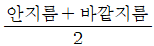
- 배관나사의 바깥지름
(정답률: 62%)
76. 배관의 신축이음에 대한 설명으로 틀린 것은?
- 슬리브형은 단식과 복식의 2종류가 있으며, 고온, 고압에 사용한다.
- 루프형은 고압에 잘 견디며, 주로 고압증기의 옥외 배관에 사용한다.
- 벨로즈형은 신축으로 인한 응력을 받지 않는다.
- 스위블형은 온수 또는 저압증기의 배관에 사용하며, 큰 신축에 대하여는 누설의 염려가 있다.
(정답률: 48%)
77. 고알루미나(high alumina)질 내화물의 특성에 대한 설명으로 옳은 것은?
- 내마모성이 적다.
- 하중 연화온도가 높다.
- 고온에서 부피변화가 크다.
- 급열, 급냉에 대한 저항성이 적다.
(정답률: 50%)
78. 에너지이용 합리화법령에 따라 에너지사용량이 대통령령이 정하는 기준량 이상이 되는 에너지다소비사업자는 전년도의 분기별 에너지사용량·제품생산량 등의 사항을 언제까지 신고하여야 하는가?
- 매년 1월 31일
- 매년 3월 31일
- 매년 6월 30일
- 매년 12월 31일
(정답률: 70%)
79. 신재생에너지법령상 바이오에너지가 아닌 것은?
- 식물의 유지를 변환시킨 바이오디젤
- 생물유기체를 변환시켜 얻어지는 연료
- 폐기물의 소각열을 변환시킨 고체의 연료
- 쓰레기매립장의 유기성폐기물을 변환시킨 매립지가스
(정답률: 64%)
80. 보온이 안 된 어떤 물체의 단위면적당 손실열량이 1600kJ/m2이었는데, 보온한 후에 단위면적당 손실열량이 1200kJ/m2이라면 보온효율은 얼마인가?
- 1.33
- 0.75
- 0.33
- 0.25
(정답률: 40%)
5과목: 열설비설계
81. 노통보일러에서 브레이징 스페이스란 무엇을 말하는가?
- 노통과 가셋트 스테이와의 거리
- 관군과 가셋트 스테이와의 거리
- 동체와 노통 사이의 최소거리
- 가셋트 스테이간의 거리
(정답률: 64%)
82. 연관의 바깥지름이 75mm인 연관보일러 관판의 최소두께는 몇 mm 이상이어야 하는가?
- 8.5
- 9.5
- 12.5
- 13.5
(정답률: 47%)
83. 보일러 부하의 급변으로 인하여 동 수면에서 작은 입자의 물방울이 증기와 혼입하여 튀어오르는 현상을 무엇이라고 하는가?
- 캐리오버
- 포밍
- 프라이밍
- 피팅
(정답률: 60%)
84. 맞대기 용접이음에서 질량 120kg, 용접부의 길이가 3cm, 판의 두께가 2mm 라 할 때 용접부의 인장응력은 약 몇 MPa 인가?
- 4.9
- 19.6
- 196
- 490
(정답률: 51%)
85. 보일러에 스케일이 1mm 두께로 부착되었을 때 연료의 손실은 몇 % 인가?
- 0.5
- 1.1
- 2.2
- 4.7
(정답률: 32%)
86. 다음 중 용해 경도성분 제거방법으로 적절하지 않은 것은?
- 침전법
- 소다법
- 석회법
- 이온법
(정답률: 35%)
87. 급수펌프인 인젝터의 특징에 대한 설명으로 틀린 것은?
- 구조가 간단하여 소형에 사용된다.
- 별도의 소요동력이 필요하지 않다.
- 송수량의 조절이 용이하다.
- 소량의 고압증기로 다량의 급수가 가능하다.
(정답률: 38%)
88. 보일러 사고의 원인 중 제작상의 원인으로 가장 거리가 먼 것은?
- 재료불량
- 구조 및 설계불량
- 용접불량
- 급수처리불량
(정답률: 69%)
89. 육용강제 보일러에서 오목면에 압력을 받는 스테이가 없는 접시형 경판으로 노통을 설치할 경우, 경판의 최소 두께(mm)를 구하는 식으로 옳은 것은? (단, P : 최고 사용압력(MPa), R : 접시모양 경판의 중앙부에서의 내면반지름(mm), σa : 재료의 허용인장응력(MPa), η : 경판자체의 이음효율, A : 부식여유(mm)이다.)
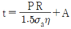
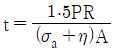
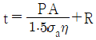
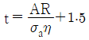
(정답률: 54%)
90. 노통보일러의 설명으로 틀린 것은?
- 구조가 비교적 간단하다.
- 노통에는 파형과 평형이 있다.
- 내분식 보일러의 대표적인 보일러이다.
- 코르니쉬 보일러와 랭카셔 보일러의 노통은 모두 1개이다.
(정답률: 68%)
91. 연관의 안지름이 140mm이고, 두께가 5mm일 때 연관의 최고사용압력은 약 몇 MPa 인가?
- 1.12
- 1.63
- 2.25
- 2.83
(정답률: 34%)
92. 최고사용압력 1.5MPa, 파형 형상에 따른 정수(C)를 1100, 노통의 평균 안지름이 1100mm일 때, 파형노통 판의 최소 두께는 몇 mm 인가?
- 12
- 15
- 24
- 30
(정답률: 47%)
93. 다음 그림과 같이 길이가 L인 원통 벽에서 전도에 의한 열전달률 q[W]을 아래 식으로 나타낼 수 있다. 아래 식 중 R을 그림에 주어진 ro, ri, L로 표시하면? (단, k는 원통 벽의 열전도율이다.)
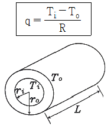
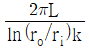
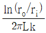
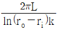
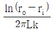
(정답률: 43%)
94. 급수에서 ppm 단위에 대한 설명으로 옳은 것은?
- 물 1mL중에 함유한 시료의 양을 g으로 표시한 것
- 물 100mL중에 함유한 시료의 양을 mg으로 표시한 것
- 물 1000mL중에 함유한 시료의 양을 g으로 표시한 것
- 물 1000mL중에 함유한 시료의 양을 mg으로 표시한 것
(정답률: 64%)
95. 횡연관식 보일러에서 연관의 배열을 바둑판 모양으로 하는 주된 이유는?
- 보일러 강도 증가
- 증기발생 억제
- 물의 원활한 순환
- 연소가스의 원활한 흐름
(정답률: 56%)
96. 상당증발량이 5.5t/h, 연료소비량이 350kg/h인 보일러의 효율은 약 몇 % 인가? (단, 효율 산정 시 연료의 저위발열량 기준으로 하며, 값은 40000 kJ/kg 이다.)
- 38
- 52
- 65
- 89
(정답률: 22%)
97. 보일러 안전사고의 종류가 아닌 것은?
- 노통, 수관, 연관 등의 파열 및 균열
- 보일러 내의 스케일 부착
- 동체, 노통, 화실의 압궤 및 수관, 연관 등 전열면의 팽출
- 연도나 노 내의 가스폭발, 역화 그 외의 이상연소
(정답률: 72%)
98. 실제증발량이 1800kg/h인 보일러에서 상당증발량은 약 몇 kg/h 인가? (단, 증기엔탈피와 급수엔탈피는 각각 2780 kJ/kg, 80 kJ/kg 이다.)
- 1210
- 1480
- 2020
- 2150
(정답률: 24%)
99. 노벽의 두께가 200mm이고, 그 외측은 75mm의 보온재로 보온되고 있다. 노벽의 내부온도가 400℃이고, 외측온도가 38℃일 경우 노벽의 면적이 10m2 라면 열손실은 약 몇 W인가? (단, 노벽과 보온재의 평균 열전도율은 각각 3.3 W/m·℃, 0.13 W/m·℃ 이다.)
- 4678
- 5678
- 6678
- 7678
(정답률: 48%)
100. 보일러 내처리를 위한 pH 조정제가 아닌 것은?
- 수산화나트륨
- 암모니아
- 제1인산나트륨
- 아황산나트륨
(정답률: 41%)
미분탄 연소는 고체연료를 작은 입자로 분쇄하여 연소시키는 방법으로, 연소 효율이 높아서 대규모 발전소에서 많이 사용됩니다. 유동층 연소는 고체연료를 공기와 함께 유동층으로 만들어 연소시키는 방법으로, 연소 공기의 양을 조절하여 연소 온도를 조절할 수 있습니다. 화격자 연소는 고체연료를 화격자 안에 넣고 연소시키는 방법으로, 연소 온도가 높아서 연소 효율이 높습니다.
하지만 액중 연소는 고체연료가 아닌 액체연료를 연소시키는 방법입니다. 액체연료는 고체연료와는 달리 액체 상태로 존재하기 때문에 연소 방법도 다릅니다. 따라서 액중 연소는 고체연료의 연소 방법이 아닙니다.